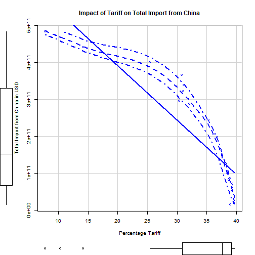
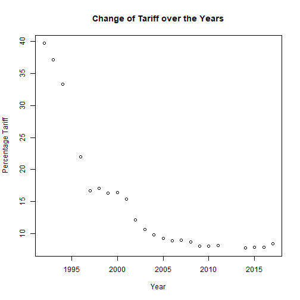
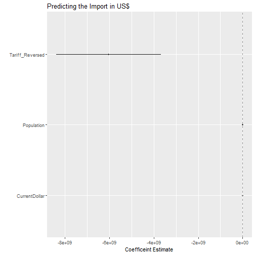
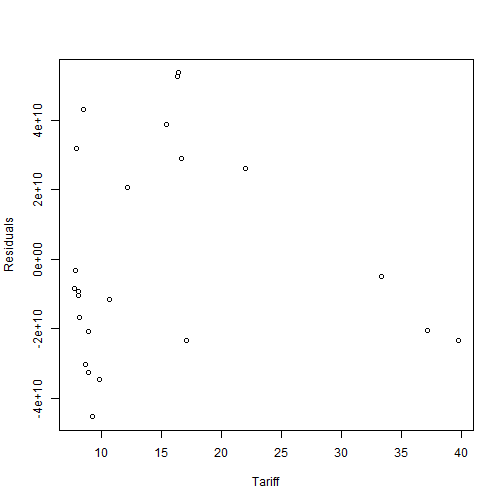
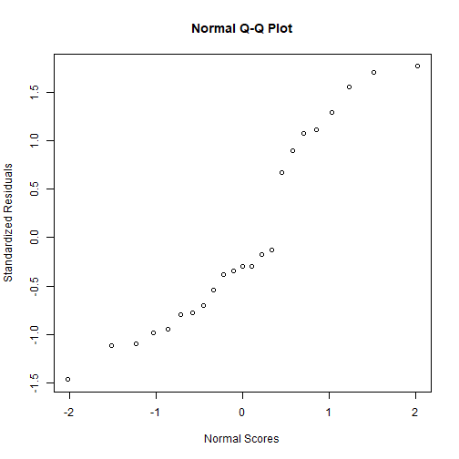
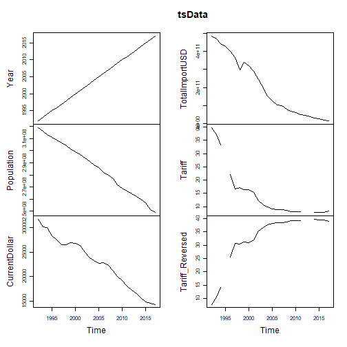
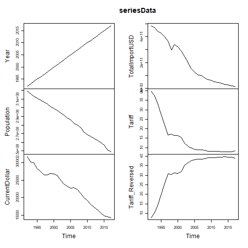
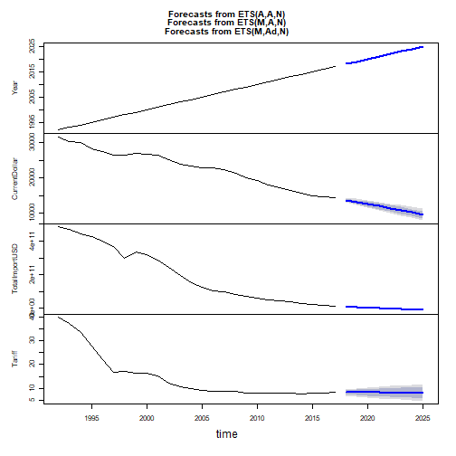

By: Jose Luis Gomez-Angulo, Becky Kim and Tongtong Xu
Installing packages. It sometimes requires restarting R session and deletes variables So we're installing them upfront
listOfPackages0 <- c("zoo","forecast", "MARSS")
new.packages0 <- listOfPackages0[!(listOfPackages0 %in% installed.packages()[,"Package"])]
if(length(new.packages0)) install.packages(new.packages0)
library(zoo) # Importing zoo library to take care of missing data while
# decomposing the time series data
library(forecast) # forecast library contains forecasting funcs for time series
# and linear models
library(MARSS) # Multivariate time-series analasys
Download the file from the RAW github file
download.file("https://raw.githubusercontent.com/brmkim/599GroupRepo/master/tariff_import.csv",
destfile = "/tmp/test.csv", method = "curl")
df <- read.csv("/tmp/test.csv", stringsAsFactors = FALSE)
These are the contents:
str(df)
## 'data.frame': 26 obs. of 7 variables:
## $ Year : int 1992 1993 1994 1995 1996 1997 1998 1999 2000 2001 ...
## $ Population : int 318868000 316168000 313443000 311116000 308827000 306553000 304280000 301483000 299106000 296824000 ...
## $ CurrentDollar : int 31653 30176 30027 28281 27554 26558 26530 26964 26804 26352 ...
## $ X2017Dollar : int 32751 31276 31649 30250 30097 29923 30385 30775 31767 32117 ...
## $ TotalImportUSD : num 4.83e+11 4.68e+11 4.40e+11 4.26e+11 3.99e+11 ...
## $ Tariff : num 39.7 37.1 33.3 NA 22 ...
## $ Tariff_Reversed: num 7.74 10.35 14.13 NA 25.43 ...
Data size: 26 observations on 7 variables (actually 6)
'Year': Year 'Population': population of the US in that year 'CurrentDollar': median income of US individuals (not household) in current dollar 'x2017Dollar': median income converted to 2017 dollar 'TotalImportUSD': total amount of import measured in USD 'Tariff': mean percentage tariff in that year 'Tariff_Reversed': reversed value of 'Tariff' for the regression purpose
# Check if the packages, required for drawing dot-and-whisker plot, are installed. # If not, install them
listOfPackages <- c("car","dotwhisker","ggplot2", "dplyr")
new.packages <- listOfPackages[!(listOfPackages %in% installed.packages()[,"Package"])]
if(length(new.packages)) install.packages(new.packages)
# Call the libraries
library(car)
library(ggplot2)
library(dotwhisker)
library(broom)
library(dplyr)
scatterplot(df$TotalImportUSD~df$Tariff_Reversed,
xlab = "Percentage Tariff", ylab = "Total Import from China in USD",
main = "Impact of Tariff on Total Import from China")

plot(df$Tariff~df$Year,main = "Change of Tariff over the Years", xlab = "Year",ylab = "Percentage Tariff")

The decrease of tariffs on Chinese imports can be attributed to the World Trade
Organizations (WTO) in 1995, when China became a member of the international trade
agreement.
China was a "founding member" in document under the General Agreement on Tariffs and
Trade (GATT), the WTO's predecessor. But it was not until WTO that China was formally
accepted as a trade partner.
In 1986 China had formally requested to become a part of the GATT, so there were
ongoing negotiations for WTO accession and tariff reductions from that period.
With the WTO taking effect in 1995, the tariff on China decreased dramatically around
that time and gradually afterwards.
import.lm=lm(as.numeric(TotalImportUSD) ~ Tariff_Reversed + Population +
CurrentDollar, data=df)
summary(import.lm)
##
## Call:
## lm(formula = as.numeric(TotalImportUSD) ~ Tariff_Reversed + Population +
## CurrentDollar, data = df)
##
## Residuals:
## Min 1Q Median 3Q Max
## -4.526e+10 -2.198e+10 -9.200e+09 2.752e+10 5.357e+10
##
## Coefficients:
## Estimate Std. Error t value Pr(>|t|)
## (Intercept) -1.693e+12 4.948e+11 -3.421 0.00287 **
## Tariff_Reversed -6.035e+09 1.200e+09 -5.028 7.47e-05 ***
## Population 8.461e+03 2.505e+03 3.378 0.00316 **
## CurrentDollar -1.428e+07 1.032e+07 -1.384 0.18243
## ---
## Signif. codes: 0 '***' 0.001 '**' 0.01 '*' 0.05 '.' 0.1 ' ' 1
##
## Residual standard error: 3.229e+10 on 19 degrees of freedom
## (3 observations deleted due to missingness)
## Multiple R-squared: 0.9642, Adjusted R-squared: 0.9586
## F-statistic: 170.8 on 3 and 19 DF, p-value: 6.424e-14
Out of three independent variables, the percentage of tariffs and US population variables are shown to be statistically significant at 0.001 and 0.01 levels of confidence respectively.
As the p-value is less than 0.05, we reject the null hypothesis. Therefore there is a significant relationship between the variables. Adjusted R-squared value is 0.9586. It indicates that the model explains the variability of the response data around its mean.
Creating the dot-and-whisker plot
model1_t = tidy(import.lm) %>%
mutate(model = "Model 1")
dwplot(model1_t) +
geom_vline(xintercept = 0,
colour = "grey60",
linetype = 2) +
scale_colour_grey(start = .1, end = .7) +
xlab("Coefficeint Estimate") +
ylab("") +
ggtitle("Predicting the Import in US$")

The reversed tariff's range is too big that it's impossible to see that of populationUS and medianIncomeCurrentDollar. I eliminated the reversedTariff and see the dot-and-whisker graph for the other two variables. It turned out, population is still on the 0, and CurrentDollar shoed a range of negative to positive values. I thought showing the graph was of little meaning, since CurrentDollar was not statistically significant in explaining the Total Import. So I did not include the regression nor the graph.
import.res = resid(import.lm)
tariffTable = df$Tariff
# length difference between above two vars is giving me trouble
# so removing the NA values from tariffTable vector
tariffTable = tariffTable[!is.na(tariffTable)]
plot(tariffTable, import.res,
ylab="Residuals", xlab="Tariff")

#abline(0,0)
import.stdres = rstandard(import.lm)
qqnorm(import.stdres, xlab="Normal Scores", ylab="Standardized Residuals")

#qqline(import.stdres)
# Reversing the order of the year from sml to lg
#dfReverseOrder = df[order(df$Year), ]
#dfReverseOrder$Year = NULL
# Removing unnecessary columns
df$X2017Dollar = NULL
#dfReverseOrder$tariffPercentage = NULL
# ts() function converts a numeric vector into a time-series object
tsData = ts (df, start=df[1,1], end=df[26,1], frequency=1) # yearly data
#tsData
Graphing the time-series data
plot(tsData)
 Notice the gap in the lines due to the missing values
Filling the missing tariff values with approximated values (Years 1995, 2012, 2013) Chose not to exclude NAs because later excluded years will cause problems
tsDataNoNA = na.approx.default(tsData)
seriesData = ts(tsDataNoNA, start = tsDataNoNA[1,1], end=tsDataNoNA[26,1])
plot.ts(seriesData) # No gaps

## Trim Columns
reducedCols = tsDataNoNA[,c(1,3,4,5)] # Making a dataframe composed of
# Median Income, Total Imports in USD, and Tariff %
reducedTS = ts(reducedCols, start = reducedCols[1,1], end=reducedCols[26,1])
#install.packages("forecast")
#library(zoo)
#library(forecast)
## "forecast() function is a generic function for forecasting from time series models.
## The function invokes particular methods which depen on the class of the first argument"
seriesForecast = forecast(reducedTS, h=8) # forecasting next 8 years
## Show predicted values in tables and graph
seriesForecast
## Year
##
## CurrentDollar
##
## TotalImportUSD
##
## Tariff
plot(seriesForecast) # shows a 80%/95% prediction intervals for the forecast

Below is an extra part for making a PDF document from Rmd file
Instructions from http://rprogramming.net/create-html-or-pdf-files-with-r-knitr-miktex-and-pandoc/
Step 1. Install MiKTex from http://miktex.org/download Step 2. Install Pandoc https://code.google.com/archive/p/pandoc/downloads Step 3. Install Knitr and Markdown SteP 4. Create .Rmd file Step 5. Produce HTML and PDF output files
### Makng a PDF Document ###
# Set working directory. THIS IS AN IMPORTANT STEP.
setwd("C:/Users/boram/Documents/GitHub/599GroupRepo")
knitrPackages <- c("knitr","markdown")
newpackages <- knitrPackages[!(knitrPackages %in% installed.packages()[,"Package"])]
if(length(newpackages)) install.packages(newpackages)
# x = rev(.packages())
# if (file.exists("C:/Program Files/R/R-3.5.3/library"))
# x = setdiff(c(readLines("C:/Program Files/R/R-3.5.3/library"), x), .base.pkgs)
# writeLines(x, "C:/Program Files/R/R-3.5.3/library")
require(knitr)
require(markdown)
# Create .md, .html, and .pdf files
knit("599Final.Rmd")
##
##
## processing file: 599Final.Rmd
##
|
| | 0%
|
|.. | 3%
## ordinary text without R code
##
##
|
|.... | 7%
## label: unnamed-chunk-29
##
|
|....... | 10%
## ordinary text without R code
##
##
|
|......... | 14%
## label: unnamed-chunk-30
##
|
|........... | 17%
## ordinary text without R code
##
##
|
|............. | 21%
## label: unnamed-chunk-31
##
|
|................ | 24%
## ordinary text without R code
##
##
|
|.................. | 28%
## label: unnamed-chunk-32
##
|
|.................... | 31%
## ordinary text without R code
##
##
|
|...................... | 34%
## label: unnamed-chunk-33
##
|
|......................... | 38%
## ordinary text without R code
##
##
|
|........................... | 41%
## label: unnamed-chunk-34
##
|
|............................. | 45%
## ordinary text without R code
##
##
|
|............................... | 48%
## label: unnamed-chunk-35
##
|
|.................................. | 52%
## ordinary text without R code
##
##
|
|.................................... | 55%
## label: unnamed-chunk-36
##
|
|...................................... | 59%
## ordinary text without R code
##
##
|
|........................................ | 62%
## label: unnamed-chunk-37
##
|
|........................................... | 66%
## ordinary text without R code
##
##
|
|............................................. | 69%
## label: unnamed-chunk-38
##
|
|............................................... | 72%
## ordinary text without R code
##
##
|
|................................................. | 76%
## label: unnamed-chunk-39
##
|
|.................................................... | 79%
## ordinary text without R code
##
##
|
|...................................................... | 83%
## label: unnamed-chunk-40
##
|
|........................................................ | 86%
## ordinary text without R code
##
##
|
|.......................................................... | 90%
## label: unnamed-chunk-41
##
|
|............................................................. | 93%
## ordinary text without R code
##
##
|
|............................................................... | 97%
## label: unnamed-chunk-42
##
|
|.................................................................| 100%
## ordinary text without R code
## output file: 599Final.md
## [1] "599Final.md"
markdownToHTML("599Final.md", "599Final.html", options=c("use_xtml"))
system("pandoc -s 599Final.html -o 599Final.pdf")